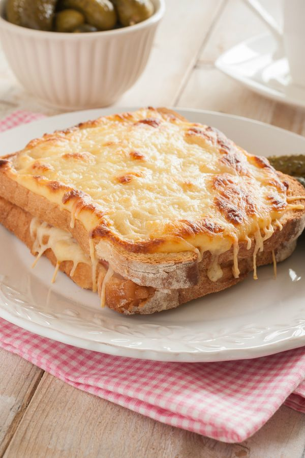

Croque Monsieur

Description:
Croque monsieur literally means “mister crunch,” and it’s also a classic French bar snack, a sandwich consisting of gruyère cheese, ham, and buttered bread. The bread is either toasted until the cheese melts or fried in butter, like a grilled cheese.
It first appeared on French menus in the early twentieth century and has since spread throughout the world. In France, it’s typically made with pain de mie, a soft, white, rectangular sandwich loaf, but croques can also be made with white country-style bread.
Ingredients
- 5 tbsp plus 8 tbsp unsalted butter, divided
- 1/4 cup all-purpose flour
- 4 cups whole milk
- 2 egg yolks
- 2 tsp kosher salt
- 1/2 tsp ground nutmeg
- 8 ½-inch-thick slices pain de mie or other white bread
- 8 slices ham, such as French jambon
- 8 slices Gruyère cheese
Steps
- Make the béchamel sauce: In a medium saucepot over medium heat, warm 5 tablespoons butter until melted. Gradually add flour and stir with a wooden spoon until smooth.
- Cook the mixture for 2-3 minutes, keeping a close eye on it to avoid unwanted burning. In a separate saucepot, heat the milk until it is just about to boil.
- Add the hot milk to the butter mixture, ½ cup at a time, constantly whisking. Cook 12 minutes, stirring constantly. Turn heat off.
- Slowly stir in 1 egg yolk at a time. Season with salt and nutmeg. Heat oven to 300°F.
- Assemble the sandwich: Generously spread four slices of bread with béchamel sauce. Top each with ham and cheese and cover with remaining bread.
- Melt the remaining 8 tablespoons butter and brush both sides of sandwiches with melted butter. Fry sandwiches in a hot cast iron pan or on a griddle until golden brown. Top sandwiches with more béchamel sauce and transfer to the oven to continue cooking until cheese bubbles, about 5-10 minutes.